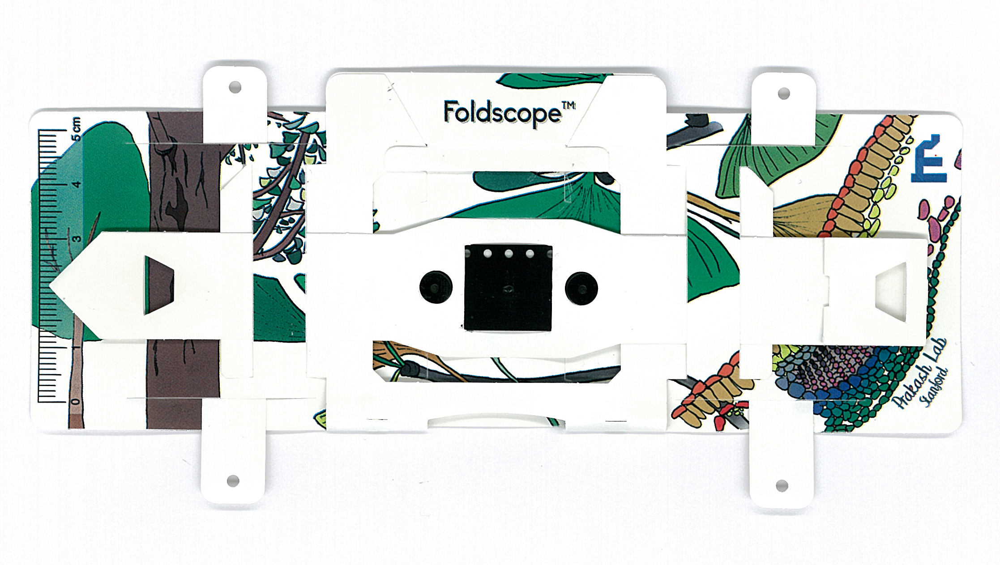
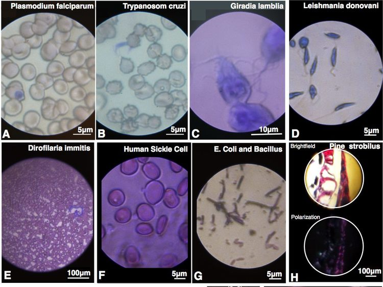
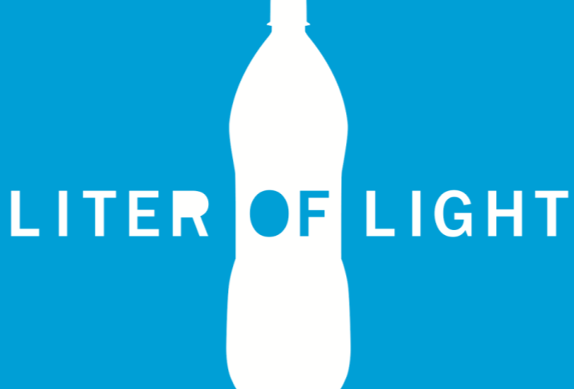
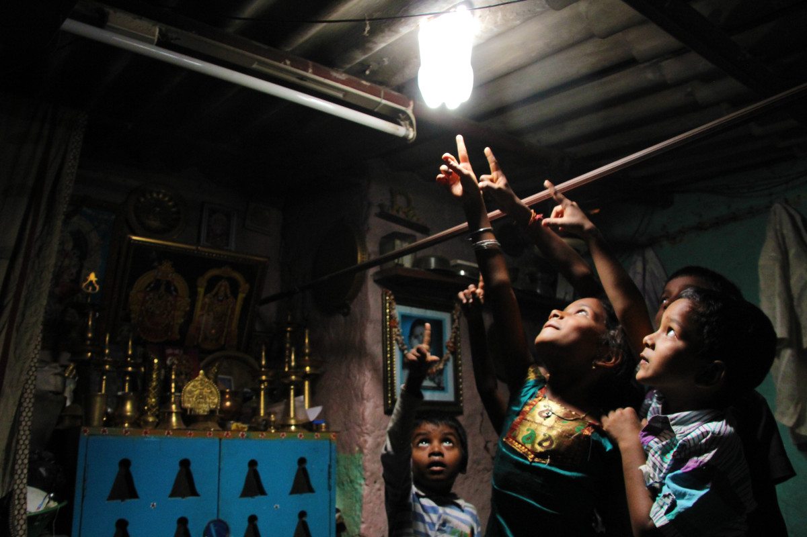

Our Projects - An Ambition with the dimension of Reality
What is the Foldscope?

A Foldscope is an optical microscope that can be assembled from simple components, including a sheet of paper and a lens.
It was developed byManu Prakash of Stanford University and designed to cost less than US$1 to build.
It is part of the "frugal science" movement which aims to make cheap and easy tools available for scientific use in the developing
world.
The basic principle of using a small spherical lens held close to the eye dates back to Antonie van Leeuwenhoek, who was the first to see single-celled organisms using such a lens held in a device of his own design. It is essentially an optical microscope that can be assembled from a punched sheet of cardstock, a spherical glass lens, a light emitting diode and a diffuser panel, along with a watch battery that powers the LED. Once assembled, the Foldscope is about the size of a bookmark. The Foldscope weighs 8 grams and comes in a kit with multiple lenses that provide magnification from 140X to 2,000X. The kit also includes magnets that can be stuck onto the Foldscope to attach it to a smartphone, allowing the user to take pictures of the magnification.
The project was funded by several organisations including the Bill & Melinda Gates Foundation, which gave a grant of US $100,000 for research in November 2012.
What we plan to do -

We have already finished assembling the foldscope and have started looking at different things such as human blood, leaves and mosquitoes, through it. We are keen to capture microscopic images of a wide array of objects. We will share these images with the international online Foldscope committee named Foldscope Explore. We have also planned to host an exhibition titled ‘’Life Under a microscope”, where all the photos taken by us will be put up on display for the public and especially school students. We will try to make the exhibition interactive by including videos of living cells and organising a fun “Identify the image” contest.
In the future, we have plans to distribute Foldscopes across schools which cannot afford a traditional microscope.
What is it - An adoption of A liter of Light Project

Liter of Light is a global open source movement aiming to provide ecologically sustainable and cost-free lighting for simple dwellings with thin roofs. The device is simple: a transparent 1.5–2 L plastic bottle, as typically used for carbonated drinks, is filled with water plus a little bleach to inhibit algal growth and fitted into a hole in a roof. The device functions like a deck prism: during daytime the water inside the bottle refracts sunlight, delivering about as much light as a 40–60-watt incandescent bulb to the interior. A properly installed solar bottle can last up to 5 years.
What we plan to do -

The 'Liter of Light' project is an inexpensive method which can truly 'light up' the lives of the less fortunate. Recently our chapter members demonstrated the famous open source movement 'Liter of Light' at the SPIE Optics and Photonics 2016 conference in San Diego, CA. We are about to implement this novel idea at the villages of Ramgarh, Jharkhand and the Sundarbans, West Bengal. Most of the houses in both these places do not have electricity for a major part of the day and thus, by using this set up, houses can be lit up.
What is the student satellite programme?
ISRO has influenced educational institutions by its activities like making satellites for communication,
remote sensing and astronomy. The launch of Chandrayaan-1 increased the interest of universities and institutions towards
making experimental student satellites. Capable Universities and institution can venture into space technology on-orbit
with guidance and support from ISRO in following ways.
Every satellite carries a payload that performs the intended function to achieve the mission goal and the main bus that supports the payload function. The Development of payloads may comprise detectors, electronics and associated algorithms, which can be an experimental piggy back payload on the ISRO’s on-going (Small or operational) satellite projects.
Design and development of detectors, payload electronics, and associated algorithm / experiments that enhance the application of space services to mankind is a continuing R&D activity in several educational institutions all over the world. Educational institutions can propose the payloads developed by them to be flown on ISRO’s small satellites.
Under this option, the payload only is developed by the Universities or Institutions and launched with ISROs satellite missions which has other ISRO’s payloads. Data Handing and data transmission is done by ISRO as the part of satellite bus.
After launch ISRO will acquire payload data and disseminate it to Universities/ institutions further processing and analysis.
Under this option Universities have to design, fabricate, test the satellite Bus & Payload and deliver the integrated spacecraft for launch. Technical guidance in designing, fabrication and testing will be provided by ISRO. Some critical materials for the space mission will also be provided by ISRO.
The designs and test results are then reviewed by ISRO team.
Under this option more than one University/Institution may participate. One among them will be the focal point for the ISRO. After launch, the collected data will be archived and disseminated by the university/Institution(s).
What we plan to do -
Quite a few Indian institutes have already launched their satellites, with "Pratham'' being the most recent launch by students of Indian Institute of Technology, Bombay. Our student chapter and institution envisions to venture into this great opportunity of designing our own satellite/payload with ISRO.